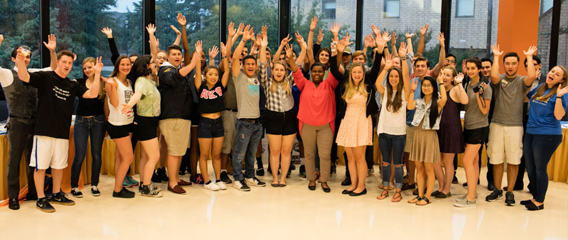

Welcome to Club Connect! This web application allows you to explore clubs and organizations that exist on your college campus. From multicultural groups to the intramural badminton team, there is something for everyone! This app also enables you to post reviews of events and clubs that you attend. With one login away, you'll be able to dive into the trendiest clubs on campus. Go Connect!
This app was created by the collaborative effort of Galaan, Emmanuel, Jassmin and Getzi. They all took initiative to launch this site. To learn more about the developers, press here.

Home: You are here
About Our Team: To learn more about our team
Public Feed: Do as you wish for your live feed which may contain reviews and images
Statistics/Charts: To get user insight into club information
Login: Click to login into your personal portal and start connecting!